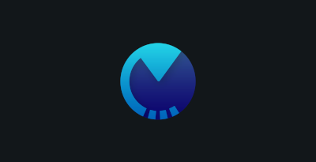
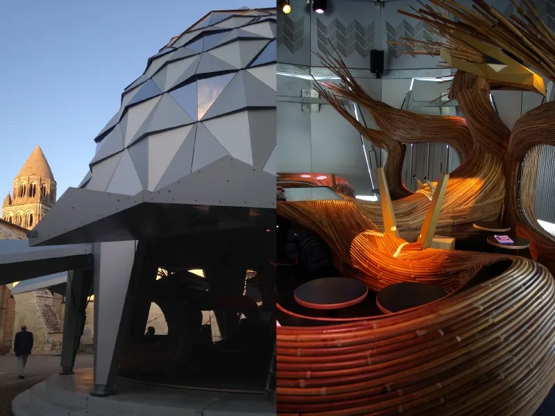
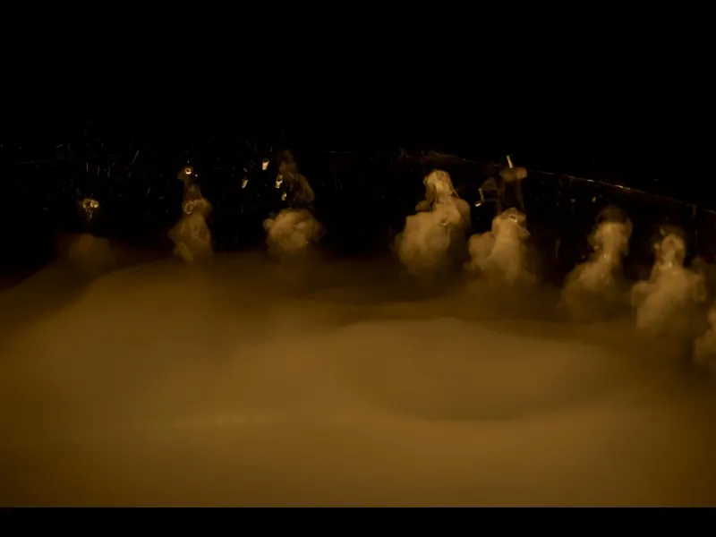
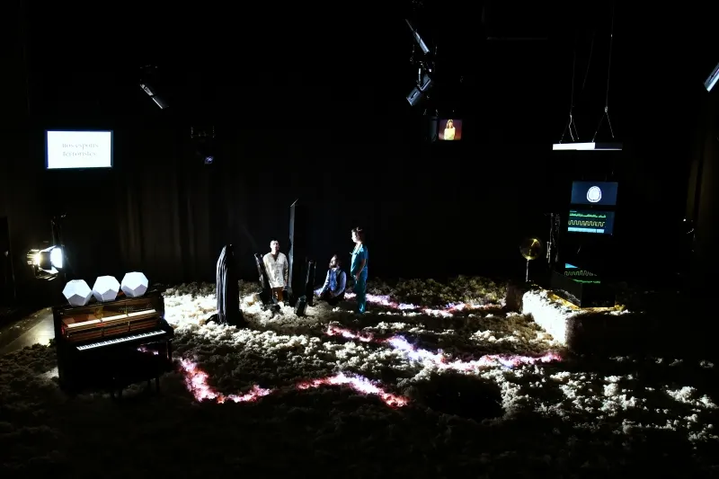
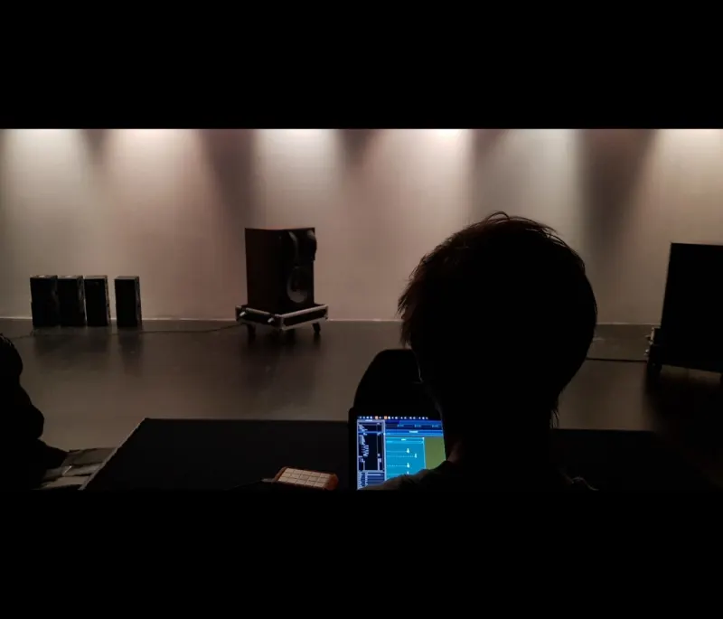
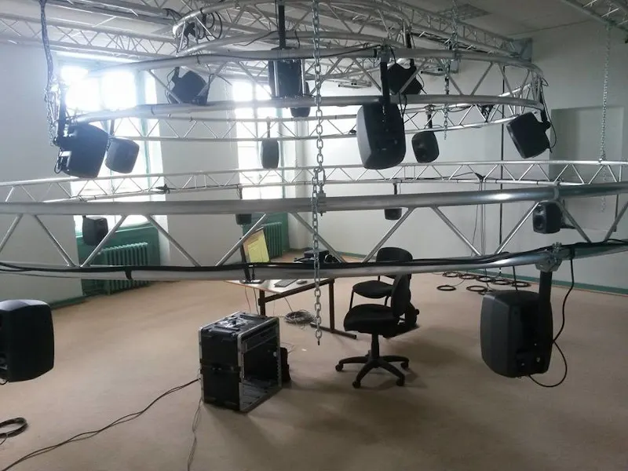
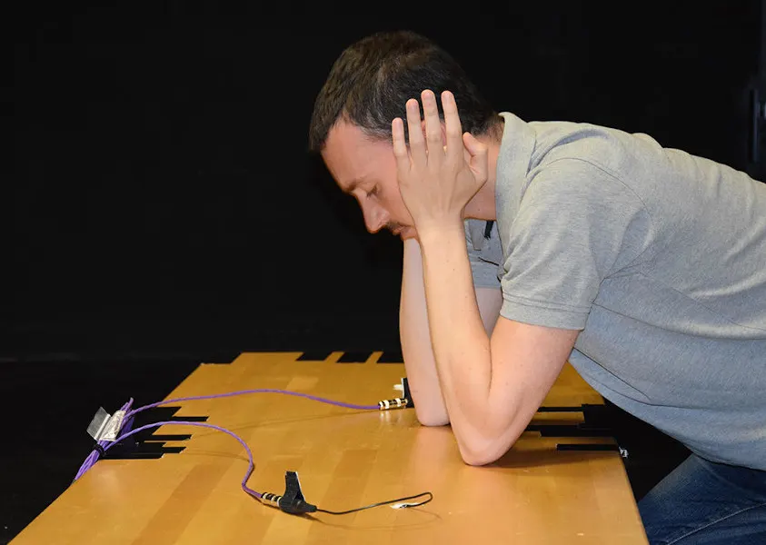

<!-- Loading the carousel for the gallery -->

<link rel="stylesheet" href="/owlcarousel/owl.carousel.min.css">
<link rel="stylesheet" href="/owlcarousel/owl.theme.default.min.css">

<!-- Main -->
<article id="main" style="background-color: var(--dark-grey);">

<!-- Banner -->
<div style="text-align: center;">
<div id="banner" class="background" >
   

   <div class="overlay">
        <div class="inner">
            <header>
                <!-- Logo -->
                <div style="display:flex; justify-content:center; align-items: center;">
                    
                    <h1 class="software">ossia score</h1>
                </div>

                   <div class="line"></div>
                <!-- Short description -->
                <h2 class="catchphrase">A free and open-source sequencer</h2>

                <p style="font-size: 20px;"> A <b>free, open-source, cross-platform intermedia sequencer </b> for precise and flexible scripting of <b>interactive</b>  scenarios. <br/> Control and score any OSC-compliant software or hardware:
                Max/MSP, PureData, openFrameworks, Processing… </p>
                <br/>
                <!-- Download button -->
            <a href="/score/download.html" class="download">Download</a>
            </header>

        </div>
    </div>
</div>
</div>
<!-- Awards -->
<section id="index" class="white" style="padding-top: 4em;">
    <h2 style="text-align: center;" ><span class="title-section" style="color: black; border-color:var(--orange);">Supporting organizations</span></h2>
    <div class="logo-grid" style="padding-top: 0.1em;">
    <a href="https://sat.qc.ca/"></a>
    <a href="https://www.unrealengine.com/"></a>
    <a href="https://www.mozilla.org/" ></a>
    <a href="https://opencollective.com/"></a>
    </div>
    <div class="logo-grid" style="padding-top: 0.1em;">
    <a href="https://anr.fr/" ></a>
    <a href="https://www.culture.gouv.fr/"></a>
    <a href="https://www.labri.fr/"></a>
    <a href="https://scrime.u-bordeaux.fr/"></a>
    <a href="https://www.blueyeti.fr/"></a>
    </div>
</section>

   <!-- Features -->
<div id="overlay" onclick="hideOverlay()">

</div>
 <section id="index" class="dark-grey" >
       <h2 style="text-align: center;" ><a href="/score/about.html" class="title-section">What is ossia score ?</a></h2>
       <p style="text-align: center;"><a href="/alternatives.html" style="color: var(--pale-blue); font-size: 1.1em;">Show control, OSC timelines, video mapping, lighting, installations: see what ossia score can do for you</a></p>
       <div class="feature-container">
            <div class="feature image-container">
                
            </div>
            <div class="feature text" >
                <h2>An intermedia sequencer</h2>
                <p> Sequence various kinds of media in an intelligent timeline:
                    <ul>
                        <li>Playback most audio formats, with support for multichannel</li>
                        <li>H.264 and HAP video playback, with a state-of-the art cross-platform video & shader pipeline</li>
                        <li>Send & receive OSC, MIDI, DMX or directly talk through HTTP or a serial port</li>
                        <li>Control IoT systems with CoAP, MQTT and BLE support</li>
                    </ul>
                </p>
            </div>
       </div>
        <div class="feature-container reversed">
            <div class="feature text" >
                <h2>Advanced interaction facilities</h2>
                <p>A sequencer built for interactive shows:
                    <ul>
                        <li>Trigger any part of the score upon external conditions or hardware controls</li>
                        <li>Use conditions to create branching scores visually</li>
                        <li>Control and get controlled through any external devices and protocols with a streamlined user interface</li>
                    </ul>
                </p>
            </div>
            <div class="feature image-container">
                <picture><source type="image/avif" srcset="/assets/feature-interaction.avif"></picture>
            </div>
       </div>
       <div class="feature-container">
            <div class="feature image-container">
                
            </div>
            <div class="feature text" >
                <h2>A scriptable, open software</h2>
                <p>Multiple programming languages are embedded in ossia score:
                    <ul>
                        <li>Livecode with JavaScript directly in the score for advanced mappings, or create device mapping scripts</li>
                        <li>Create blazing fast audio processors with Faust</li>
                        <li>Extend any part of the software through the C++ API</li>
                        <li>Write simple math expressions for quick control</i>
                    </ul>
                </p>
            </div>
       </div>
       <div class="feature-container reversed">
           <div class="feature text" >
               <h2>Mixed modular & timeline workflow</h2>
               <p>Connect processes in a modular way directly from its timeline:
                   <ul>
                       <li>Switch between timeline and nodal view at any point to edit processes more precisely</li>
                       <li>Create state-machine-like scores for atemporal scenarios</li>
                       <li>Nest and group without depth limit</li>
                   </ul>
               </p>
           </div>
           <div class="feature image-container">
                <picture><source type="image/avif" srcset="/assets/feature-nodal.avif"></picture>
           </div>
      </div>
 </section>


    <section id="index" class="grey">
     <div class="feature-container reversed">
            <div class="feature text" >
                <h2>Supported protocols</h2>
                <p>
                    <ul>
                        <li>These protocols are implemented behind a common interface in libossia.</li>
                        <li>Any app using libossia can thus benefit from their support, bridge them, etc.</li>
                        <li>These protocols are available under a simple UI in ossia score</li>
                    </ul>
                </p>
            </div>
            <div class="feature logo-grid">
                <a href="https://www.midi.org/"></a>
                <div><span>OSC</span></div>
                <a href="https://spout.zeal.co/" class="tooltip"><span class="tooltiptext">Spout</span></a>
                <a href="https://syphon.info/" class="tooltip"><span class="tooltiptext">Syphon</span></a>
                <a href="https://www.arduino.cc/"></a>
                <a href="https://www.enttec.com/range/controls/dmx-usb-interfaces/"><span>DMX</span></a>
                <div><span>HTTP</span></div>
                <div></div>
                <a href="https://www.phidgets.com/" class="tooltip"><span class="tooltiptext">Phidgets</span></a>
                <a href="https://ndi.video/tools/"></a>
                <div class="tooltip"><span class="tooltiptext">Gamepad</span></div>
                <div class="tooltip"><span class="tooltiptext">Wiimote</span></div>
                <a href="https://www.avid.com/learn-and-support/c24" alt="Avid C|24" class="tooltip" style="margin: 0;"><span>C|24</span><span class="tooltiptext">Avid C|24</span></a>
                <a href="https://mqtt.org/" alt="MQTT" class="tooltip" style="margin: 0;"><span>MQTT</span><span class="tooltiptext">MQTTv5</span></a>
                <a href="https://en.wikipedia.org/wiki/Constrained_Application_Protocol" alt="CoAP" class="tooltip" style="margin: 0;"><span>CoAP</span><span class="tooltiptext">CoAP</span></a>
                <a href="https://en.wikipedia.org/wiki/Bluetooth_Low_Energy" alt="BLE" class="tooltip" style="margin: 0;"><span>BLE</span><span class="tooltiptext">Bluetooth Low Energy</span></a>
            </div>
       </div>
       <br/>
       <div class="feature-container ">
            <div class="feature logo-grid">
                <a href="https://madmapper.com/" class="tooltip"><span class="tooltiptext">Madmapper</span></a>
                <a href="https://www.garagecube.com/modul8/"></a>
                <a href="https://www.millumin.com/v3/index.php" class="tooltip"><span class="tooltiptext">Millumin</span></a>
                <a href="https://cycling74.com/" class="tooltip"><span class="tooltiptext">Max</span></a>
                <a href="https://puredata.info/" class="tooltip"><span class="tooltiptext">Pure Data</span></a>
                <a href="https://openframeworks.cc/" class="tooltip"><span class="tooltiptext">openFrameworks</span></a>
                <a href="https://processing.org/" class="tooltip"><span class="tooltiptext">Processing</span></a>
                <a href="https://vidvox.net/"></a>
                <a href="https://vvvv.org/"></a>
                <a href="https://faust.grame.fr/"></a>
                <a href="https://unity.com/"></a>
                <a href="https://www.unrealengine.com/"></a>
                <a href="https://github.com/patriciogonzalezvivo/glslViewer"><span>glslViewer</span></a>
                <a href="https://opencv.org/"></a>
            </div>
            <div class="feature text" >
                <h2>Compatible environments</h2>
                <p>You can use your favorite creative coding language with ossia:
                    <ul>
                        <li>Either through traditional OSC connection</li>
                        <li>Or through the more advanced OSCQuery protocol</li>
                        <li>Or through direct integration of libossia</li>
                    </ul>
                </p>
            </div>
       </div>
 </section>
    <!-- Video -->
    <section id="index" class="black" style="">
        <div class="frontpage-video">
        <div class="videoWrapper">
            <button type="button" class="yt-facade" data-id="8-KpNaF2K8Q" data-title="ossia score 3 trailer" aria-label="Play the ossia score 3 trailer (loads the video from YouTube)" title="Loads the video from YouTube">
                
            </button>
        </div>
        </div>
    </section>

   <!-- Recent posts -->
    <section class="grey blog-twitter" id="index">
        <div style="display: flex; justify-content: space-around; margin: 0;">
            <div class="blog-list">
                <h2 style="text-align: center;" ><a href="/blog.html" class="title-section" style="color: black;">Blog</a></h2>

                <div class="recent-post-view">
                    {% for post in site.posts limit:3 %}
                        <a href={{post.url}} class="thumbnail" >
                            {% if post.image %}
                                
                            {% else %}
                                
                            {% endif %}
                            <br/>
                            <h2 class="blog-title">{{post.title}} </h2>
                            <span class="blog-date">{{ post.date | date: "%b %-d, %Y" }}</span>

                        </a>
                    {% endfor %}
                </div>
            </div>
        </div>
    </section>

	<!-- Gallery -->
      <section id="index" class="black">
        <h2 style="text-align: center;" ><a href="/gallery.html" class="title-section">Gallery</a></h2>
        <div class="owl-carousel owl-theme" >
            <div class="carouselcontainer">
                <a href="/gallery.html"></a>
                <header>
                    <a href="https://web.archive.org/web/20240805094104/https://www.abbayeauxdames.org/en/musicaventure/carrousel-musical/" class="gallery-text">Carousel Musical</a> <span class="gallery-text">-</span> <a href="https://web.archive.org/web/20251215210829/http://www.blueyeti.fr/le-carrousel-musical-abbaye-aux-dames/" class="gallery-text">Blue Yeti, Abbaye aux Dames</a>
                </header>
            </div>
            <div class="carouselcontainer">
                <a href="/gallery.html"></a>
                <header>
                    <a href="https://web.archive.org/web/20260209152743/http://www.baltazars.org/project/nebula/" class="gallery-text">Nebula</a> <span class="gallery-text">-</span> <a href="https://web.archive.org/web/20260209151532/http://www.baltazars.org/" class="gallery-text">Les Baltazars</a>
                </header>
            </div>
            <div class="carouselcontainer">
                <a href="/gallery.html"></a>
                <header>
                    <a href="https://bravozoulou.fr/projets/four-for/" class="gallery-text">Four For - Bravo Zoulou</a>
                    <span class="copyright"><br/>&copy; Didier Crasnault</span>
                </header>
            </div>
            <div class="carouselcontainer">
                <a href="/gallery.html"></a>
                <header>
                    <a href="https://scrime.u-bordeaux.fr/residences/quarre" class="gallery-text">Quarrè - Pierre Cochard</a>
                </header>
            </div>
            <div class="carouselcontainer" >
                <a href="/gallery.html"></a>
                <header>
                    <a href="https://scrime.u-bordeaux.fr/residences/meta-chef-dorchestre" class="gallery-text">Méta Chef d’Orchestre - Serge Delaubier</a>
                </header>
            </div>
            <div class="carouselcontainer" >
                <a href="/gallery.html"></a>
                <header>
                    <a href="https://scrime.u-bordeaux.fr/residences/sonotact" class="gallery-text">Sonotact - Pascale Criton</a>
                </header>
            </div>
        </div>
      </section>
</article>

<script defer src="/js/jquery.min.js"></script>
<script defer src="/owlcarousel/owl.carousel.min.js"></script>
<script>
window.addEventListener('load',function(){
  jQuery('.owl-carousel').owlCarousel({
    loop:true,
    margin:10,
    nav:false,
    responsive:true,
    autoWidth: true
})
});

function displayInOverlay(img) {
  document.getElementById("overlay").style.display = "block";
  document.getElementById("overlay-image").src = img.currentSrc || img.src;
}

function hideOverlay() {
  document.getElementById("overlay").style.display = "none";
}
</script>

 
